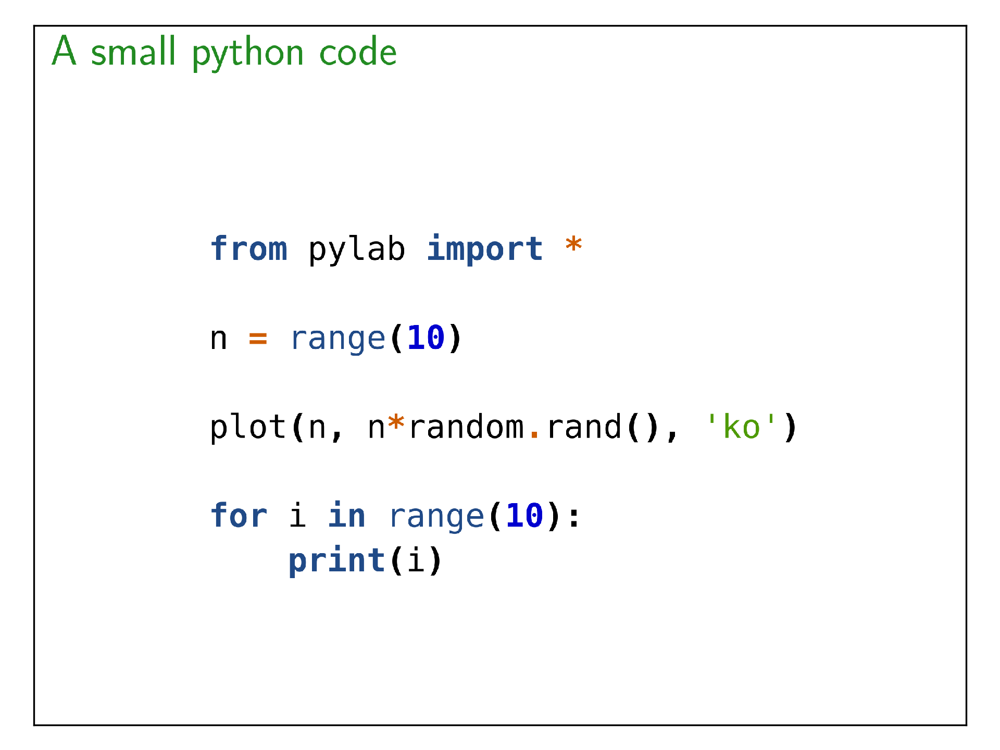

code
Include code in your presentation.
Code coloration is managed by Pygments
Warning
This module is in very draft stage !!!
from beampy import *
# Remove quiet=True to get beampy compilation outputs
doc = document(quiet=True)
with slide('A small python code'):
c = code("""
from pylab import *
n = range(10)
plot(n, n*random.rand(), 'ko')
for i in range(10):
print(i)
""", width=500)
display_matplotlib(gcs())

Module arguments
-
class
beampy.code(codetext, x='center', y='auto', width=None, language=None, size='14px')
Add highlighted code syntax to your presentation. This module require pygments.
| Parameters: |
- codetext (string) – Text of the code source to include.
- x (int or float or {'center', 'auto'} or str, optional) – Horizontal position for the code (the default is ‘center’). See
positioning system of Beampy.
- y (int or float or {'center', 'auto'} or str, optional) – Vertical position for the code (the default is ‘auto’). See positioning
system of Beampy.
- width (string, optional) – Width of the code (the default is
document._width). The value
is given as string with a unit accepted by svg syntax.
- language (string or None, optional) – Language of the source code (the default value is None, which implies
that the language is guessed by pygments). See pygments language for
available ones.
- size (string, optional) – Font size used to render the source code (the default is ‘14px’).
|
|---|
Note
This module is in very draft stage !!!
Gallery generated by Sphinx-Gallery